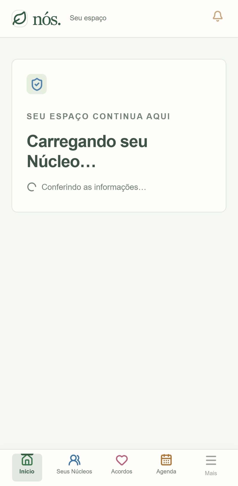
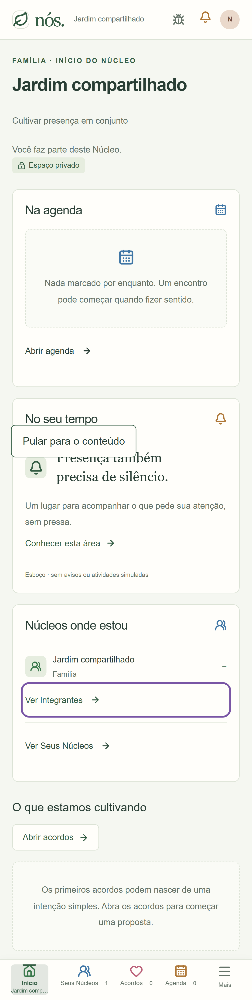
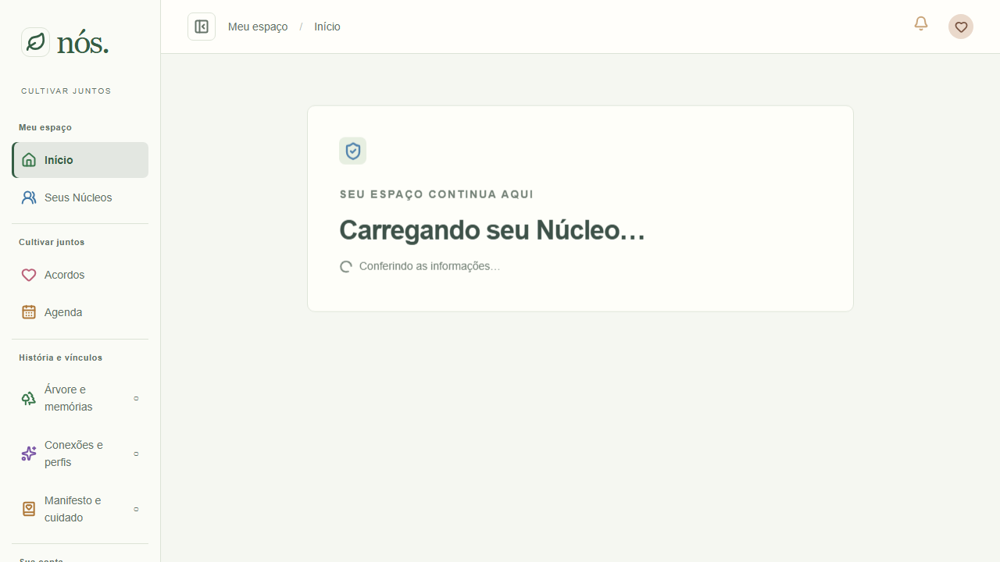
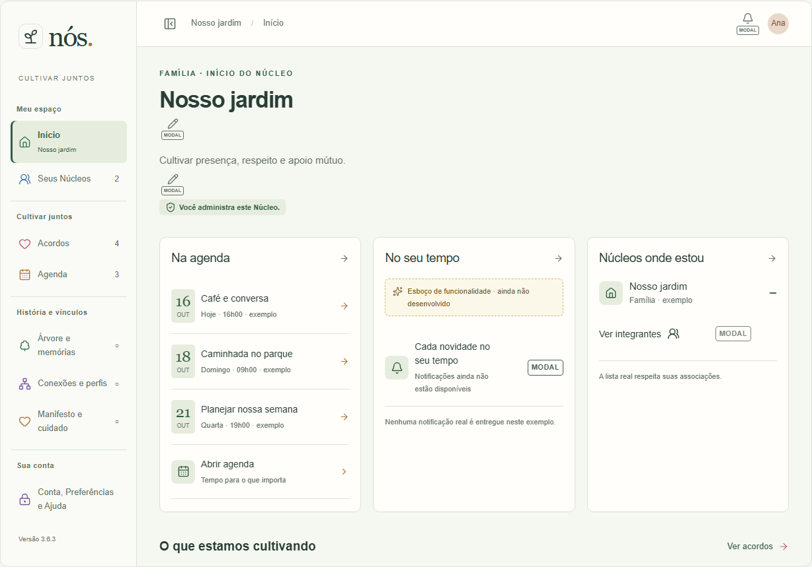
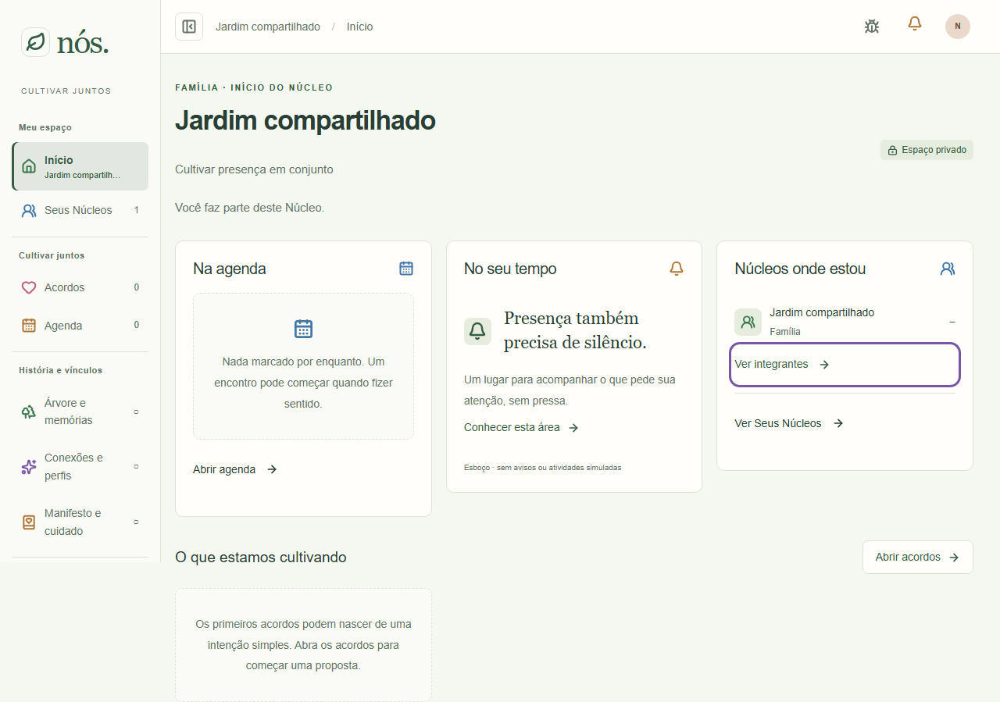

Aplicativo local3200, Supabase local, contas/dados descartáveis; Chromium desktop1280×720 e Pixel7 393×727. Atlas em preview desktop/mobile. Sem mudança de composição visual nesta correção.
“Anterior” significa texto antes da edição administrativa, capturado com a correção aplicada; não é captura de código anterior à implementação. Atlas ilustra administrador/dados de exemplo; aplicativo mostra integrante e Núcleo temporário. As diferenças de dados, permissões e conteúdo não representam regressão visual. O teste confere performance.timeOrigin inalterado, modal/rascunho preservados e atualização automática.





Não certificados: Safari, dispositivo físico e produção. Registro da entrega.